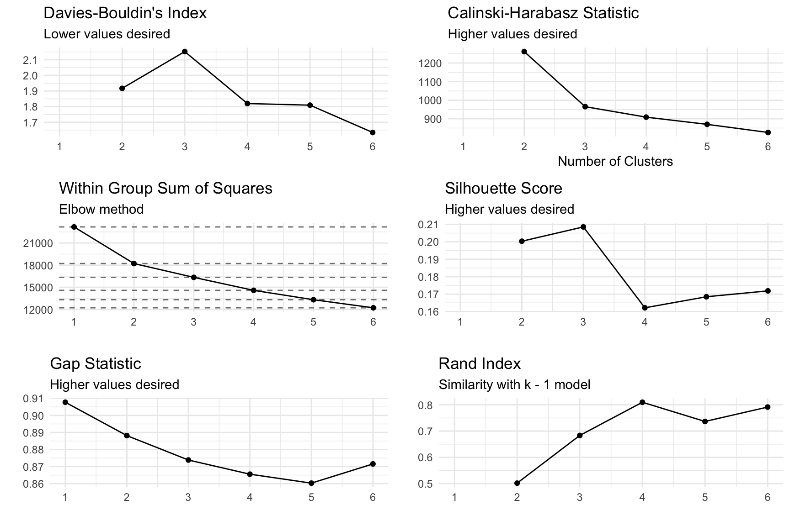
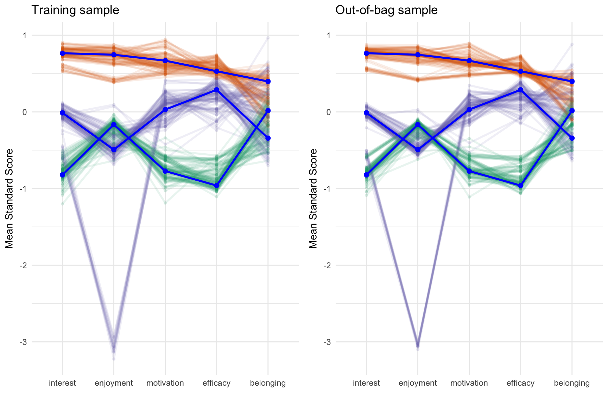
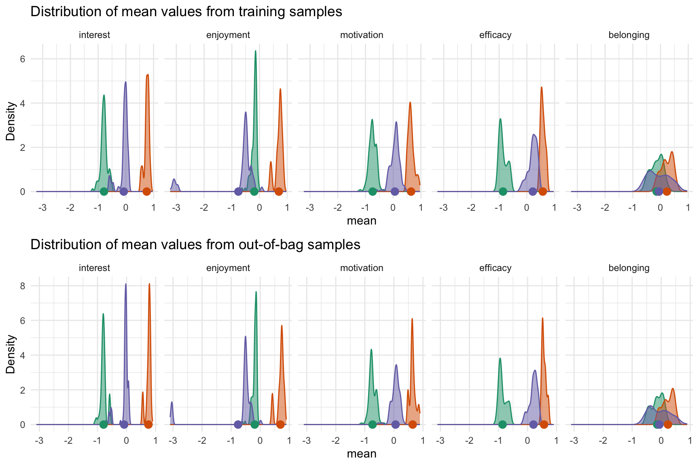
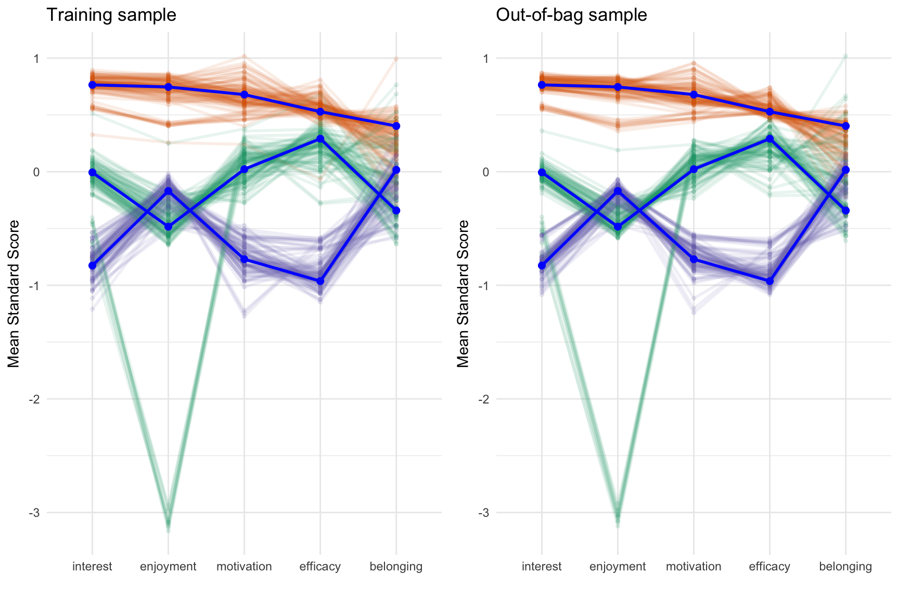
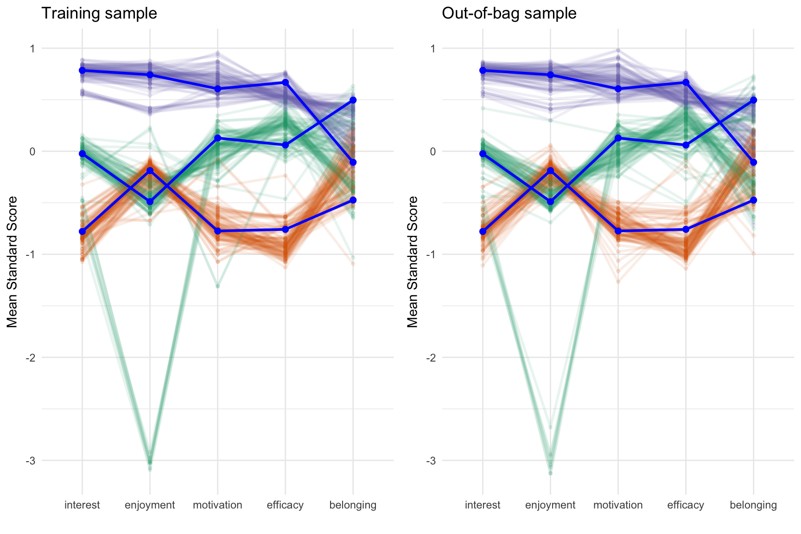
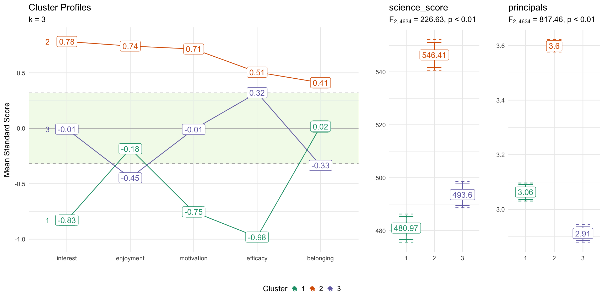

Abstract
Cluster analysis is a statistical procedure for grouping observations
using an observation-centered approach as compared to variable-centric
approaches (e.g. PCA, factor analysis). Whether a preprocessing step for
predictive modeling or the primary analysis, validation is critical for
determining generalizability across datasets. Theodoridis and
Koutroumbas (2008) identified three broad types of validation for
cluster analysis: 1) Internal cluster validation, 2) Relative cluster
validation, and 3) External cluster validation. Strategies for steps 1
and 2 are well established, however cluster analysis is typically an
unsupervised learning method where there is no observed outcome. Ullman
et al (2021) proposed an approach to validating a cluster solution by
visually inspecting the cluster solutions across a training and
validation dataset. This paper introduces the clav R
package that implements and expands this approach by generating multiple
random samples (using either a simple random split or bootstrap
samples). Visualizations of both the cluster profiles as well as
distributions of the cluster means are provided along with a Shiny
application to assist the researcher.
Introduction
Data source
The Programme for International Student Assessment (PISA) is large scale study conducted by the Organisation for Economic Co-operation and Development (OECD) every three years designed to measure 15-year-olds’ reading, mathematics, and science skill. In addition to measuring academic skills, students complete questionnaires on other areas including motivation, self-efficacy, interest, among other demographics. This study uses data from the 2015 administration in the United States. Cluster analysis will be performed on student interest, motivation, and self-efficacy and we will explore how these variables are related to two dependent variables: science skills and self-reported knowledge of science principals (see Appendix A for items that inform these scales).
The clav package includes data for the United States and
Canada, but we will only use the United States here1.
library(clav)
data(pisa2015, package = 'clav')
cluster_vars <- c('interest', 'enjoyment', 'motivation', 'efficacy', 'belonging')
outcome_vars <- c('science_score', 'principals')
pisa_usa <- pisa2015 |>
dplyr::filter(country == 'UNITED STATES') |>
dplyr::mutate(dplyr::across(dplyr::all_of(cluster_vars), clav::scale_this))Variable centric analysis
science_lm_out <- lm(
science_score ~ interest + enjoyment + motivation + efficacy + belonging,
data = pisa_usa)
summary(science_lm_out)
#>
#> Call:
#> lm(formula = science_score ~ interest + enjoyment + motivation +
#> efficacy + belonging, data = pisa_usa)
#>
#> Residuals:
#> Min 1Q Median 3Q Max
#> -274.168 -58.914 1.114 60.446 271.258
#>
#> Coefficients:
#> Estimate Std. Error t value Pr(>|t|)
#> (Intercept) 506.398 1.226 413.173 < 2e-16 ***
#> interest 15.938 1.407 11.325 < 2e-16 ***
#> enjoyment 23.511 1.283 18.318 < 2e-16 ***
#> motivation -8.043 1.318 -6.104 1.12e-09 ***
#> efficacy 16.767 1.326 12.646 < 2e-16 ***
#> belonging -1.609 1.231 -1.308 0.191
#> ---
#> Signif. codes: 0 '***' 0.001 '**' 0.01 '*' 0.05 '.' 0.1 ' ' 1
#>
#> Residual standard error: 83.46 on 4631 degrees of freedom
#> Multiple R-squared: 0.1759, Adjusted R-squared: 0.175
#> F-statistic: 197.7 on 5 and 4631 DF, p-value: < 2.2e-16
principals_lm_out <- lm(
science_score ~ interest + enjoyment + motivation + efficacy + belonging,
data = pisa_usa)
summary(principals_lm_out)
#>
#> Call:
#> lm(formula = science_score ~ interest + enjoyment + motivation +
#> efficacy + belonging, data = pisa_usa)
#>
#> Residuals:
#> Min 1Q Median 3Q Max
#> -274.168 -58.914 1.114 60.446 271.258
#>
#> Coefficients:
#> Estimate Std. Error t value Pr(>|t|)
#> (Intercept) 506.398 1.226 413.173 < 2e-16 ***
#> interest 15.938 1.407 11.325 < 2e-16 ***
#> enjoyment 23.511 1.283 18.318 < 2e-16 ***
#> motivation -8.043 1.318 -6.104 1.12e-09 ***
#> efficacy 16.767 1.326 12.646 < 2e-16 ***
#> belonging -1.609 1.231 -1.308 0.191
#> ---
#> Signif. codes: 0 '***' 0.001 '**' 0.01 '*' 0.05 '.' 0.1 ' ' 1
#>
#> Residual standard error: 83.46 on 4631 degrees of freedom
#> Multiple R-squared: 0.1759, Adjusted R-squared: 0.175
#> F-statistic: 197.7 on 5 and 4631 DF, p-value: < 2.2e-16Finding the desired number of clusters
optimal <- optimal_clusters(pisa_usa[,cluster_vars], max_k = 6)
optimal
#> k wss silhoutte gap calinski_harabasz davies_bouldin rand_index
#> 1 1 23180.00 NA 0.9077290 NaN NaN NA
#> 2 2 18221.06 0.2003285 0.8881730 1261.4359 1.916861 0.5015503
#> 3 3 16348.24 0.2085359 0.8738598 965.0861 2.152198 0.6832980
#> 4 4 14588.79 0.1621539 0.8655373 908.7634 1.819800 0.8098577
#> 5 5 13318.75 0.1684867 0.8602912 869.9972 1.809378 0.7366672
#> 6 6 12223.82 0.1718593 0.8715511 826.2544 1.634673 0.7914534Davies-Bouldin Index (1979) - DBI is a metric used to evaluate the quality of a cluster analysis by measuring the compactness of clusters and their separation from each other. A lower DBI indicates better clustering, with well-separated and compact clusters.
Calinski-Harabasz Statistic (Caliński & Harabasz, 1974) - CH statistic measures the ratio of between-cluster variance to within-cluster variance, indicating how well-separated and compact the clusters are. Higher CH values generally indicate better clustering performance.
Within group sum of squares (Thorndike, 1953) - WSS quantifies the dispersion of data points within each cluster, with lower WSS values indicating more compact and well-defined clusters.
Silhoutte score (Rousseeuw, 1986) - The silhouette value is a measure of how similar an object is to its own cluster (cohesion) compared to other clusters (separation). The silhouette value ranges from −1 to +1, where a high value indicates that the object is well matched to its own cluster and poorly matched to neighboring clusters.
Gap statistic (Tibshirani, Walther, & Hastie, 2001) - The Gap statistic works by comparing the within-cluster variation of the actual data to that of a null reference distribution, typically a uniform distribution. The gap is the difference between these two, and the optimal number of clusters is chosen where the gap statistic is maximized.
Rand index (2012) - The Rand index measures how often pairs of data points are assigned to the same or different clusters in both partitions. A higher Rand Index indicates greater similarity between the two clusterings.
plot(optimal, ncol = 2)
Validating cluster solution
One of the biggest challenges of estimating unsupervised models is
determining the accuracy of the model given that in most instances there
is now know, or observed, outcome. Since we cannot compare model outputs
with a know value, we instead look for stability of model estimates
across multiple samples. Ullman et al (2021) proposed splitting data and
visually comparing the cluster profiles across the two samples. The
clav package extends this idea by implementing an algorithm
where many samples are drawn, cluster membership is estimated with a
training dataset, and cluster membership for the out-of-bag sample is
predicted. We can then use a number of visualizations to determine the
stability of the profiles across many random samples.
The cluster_validation function implements this
algorithm. The default will estimate 100 cluster models (using the
K-means cluster, but other methods can be specified using the
cluster_fun parameter). For each iteration, 50% of the
observations will be randomly selected (the training size can be
modified using the sample_size parameter) and the cluster
model will be estimated. Cluster membership will then be predicted using
this model for the other 50% of observations. A cluster model will also
be estimated using the full dataset. The figure below shows the cluster
profiles for 100 samples for the training data on the left and for the
out-of-bag sample on the right (the paths are color coded by cluster
membership). The cluster profile using the full dataset is represented
by the blue line. For each path the mean of each variable grouped by
cluster membership is plotted. In this example we can see that there is
one cluster that is above average across all the variables (green
lines). The other two clusters are a bit mixed with the orange lines
indicating that there is a cluster that is generally below average with
the exception belonging and interest which are near the mean. The purple
lines represent a cluster that is generally nearly normal across all
variables. These plots are not intended to assist in interpreting
clusters (that will be discussed in a later section), but instead
determine if there is stability in the cluster estimates across many
samples.
cv <- cluster_validation(
pisa_usa[,cluster_vars],
n_clusters = 3)
plot(cv)
The figure below provides an alternative approach for determining stability by plotting the distribution of means across clusters and variables. Ideally we would want the standard deviation of these distributions to be as small as possible.
plot_distributions(cv, plot_in_sample = TRUE, plot_oob_sample = TRUE)
Bootstrapping
cv_boot <- cluster_validation(
pisa_usa[,cluster_vars],
n_clusters = 3,
sample_size = nrow(pisa_usa),
replace = TRUE)
plot(cv_boot)
Retraining
cv_retrain <- cluster_validation(
pisa_usa[,cluster_vars],
n_clusters = 3,
oob_predict_fun = function(fit, newdata) {
stats::kmeans(newdata, 3)$cluster
}
)
plot(cv_retrain)
Analyzing dependent variables
Profile plots
fit <- stats::kmeans(pisa_usa[,cluster_vars], centers = 3)
profile_plot(pisa_usa[,cluster_vars],
clusters = fit$cluster,
df_dep = pisa_usa[,outcome_vars],
cluster_order = cluster_vars)
Using clusters in regression analysis
kmeans_out <- stats::kmeans(pisa_usa[,cluster_vars], 3)
pisa_usa$cluster <- kmeans_out$cluster
lm_out <- lm(science_score ~ interest + enjoyment + motivation + efficacy + belonging + cluster,
data = pisa_usa)
summary(lm_out)
#>
#> Call:
#> lm(formula = science_score ~ interest + enjoyment + motivation +
#> efficacy + belonging + cluster, data = pisa_usa)
#>
#> Residuals:
#> Min 1Q Median 3Q Max
#> -275.325 -58.953 2.182 59.072 272.494
#>
#> Coefficients:
#> Estimate Std. Error t value Pr(>|t|)
#> (Intercept) 527.086 4.173 126.307 < 2e-16 ***
#> interest 17.467 1.434 12.180 < 2e-16 ***
#> enjoyment 21.286 1.350 15.768 < 2e-16 ***
#> motivation -6.969 1.330 -5.239 1.69e-07 ***
#> efficacy 20.392 1.496 13.634 < 2e-16 ***
#> belonging -3.187 1.264 -2.521 0.0117 *
#> cluster -9.808 1.892 -5.185 2.25e-07 ***
#> ---
#> Signif. codes: 0 '***' 0.001 '**' 0.01 '*' 0.05 '.' 0.1 ' ' 1
#>
#> Residual standard error: 83.23 on 4630 degrees of freedom
#> Multiple R-squared: 0.1806, Adjusted R-squared: 0.1796
#> F-statistic: 170.1 on 6 and 4630 DF, p-value: < 2.2e-16References
Caliński, T., & Harabasz, J. (1974). A dendrite method for cluster analysis. Communications in Statistics, 3(1), 1–27. https://doi.org/10.1080/03610927408827101
Davies, D. L., & Bouldin, D.W. (1979). A cluster separation measure. IEEE Transactions on Pattern Analysis and Machine Intelligence. PAMI-1 (2): 224–227. https://doi.org/10.1109/TPAMI.1979.4766909
Rand, W. M. (1971). Objective Criteria for the Evaluation of Clustering Methods. Journal of the American Statistical Association, 66(336), 846–850. https://doi.org/10.1080/01621459.1971.10482356
Rousseeuw, P.J. (1986). Silhouettes: A graphical aid to the interpretation and validation of cluster analysis. Journal of Computational and Applied Mathematics (20): 53-65. https://doi.org/10.1016/0377-0427(87)90125-7
Theodoridis, S., & Koutroumbas, K. (2008). Pattern Recognition, Fourth Edition. Academic Press, Inc.
Thorndike, R. L. (1953). Who Belongs in the Family? Psychometrika, 18(4), 267–276. https://doi.org/10.1007/BF02289263
Tibshirani, R., Walther, G., & Hastie, T. (2001) Estimating the number of clusters in a data set via the gap statistic. Journal of the Royal Statistical Society Series B: Statistical Methodology, 63(2), 411–423, https://doi.org/10.1111/1467-9868.00293
Ullmann, T., Hennig, C., & Boulesteix, A.-L. (2022). Validation of cluster analysis results on validation data: A systematic framework. WIREs Data Mining and Knowledge Discovery, 12(3), e1444. https://doi.org/10.1002/widm.1444
Appendix A: Student Questionaire Items and Scales
Belonging: Thinking about your school: to what
extent do you agree with the following statements?
(ST034)
- I feel like an outsider (or left out of things) at school.
- I make friends easily at school.
- I feel like I belong at school.
- I feel awkward and out of place in my school.
- Other students seem to like me.
- I feel lonely at school.
Interest: How much do you disagree or agree with the
statements about yourself below? (ST094)
- I generally have fun when I am learning broad science topics.
- I like reading about broad science.
- I am happy working on broad science topics.
- I enjoy acquiring new knowledge in broad science.
- I am interested in learning about broad science.
Enjoyment: How much do you disagree or agree with
the statements about yourself below? (ST094)
- I generally have fun when I am learning broad science topics.
- I like reading about broad science.
- I am happy working on broad science topics.
- I enjoy acquiring new knowledge in broad science.
- I am interested in learning about broad science.
Motivation: How much do you agree with the
statements below? (ST113)
- Making an effort in my school science subject(s) is worth it because this will help me in the work I want to do later on.
- What I learn in my school science subject(s) is important for me because I need this for what I want to do later on.
- Studying my school science subject(s) is worthwhile for me because what I learn will improve my career prospects.
- Many things I learn in my school science subject(s) will help me to get a job.
Efficacy: How easy do you think it would be for you
to perform the following tasks on your own? (ST129)
- Recognize the science question that underlies a newspaper report on a health issue.
- Explain why earthquakes occur more frequently in some areas than in others.
- Describe the role of antibiotics in the treatment of disease.
- Identify the science question associated with the disposal of garbage.
- Predict how changes to an environment will affect the survival of certain species.
- Interpret the scientific information provided on the labelling of food items.
- Discuss how new evidence can lead you to change your understanding about the possibility of life on Mars.
- Identify the better of two explanations for the formation of acid rain.
Principals: How much do you disagree or agree with
the statements below? (ST131)
- A good way to know if something is true is to do an experiment.
- Ideas in broad science sometimes change.
- Good answers are based on evidence from many different experiments.
- It is good to try experiments more than once to make sure of your findings.
- Sometimes broad science scientists change their minds about what is true in science.
- The ideas in broad science science books sometimes change.